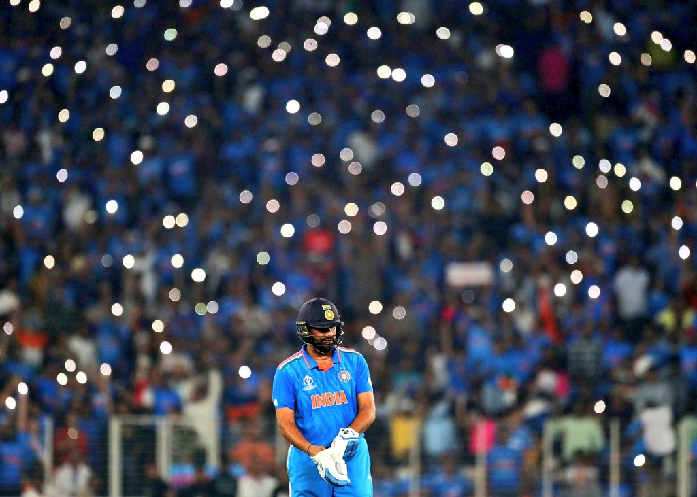

India vs Pakistan ICC Men's Cricket World Cup 2023: India won the match with 7 wickets
India vs Pakistan ICC ODI World Cup 2023:
India delivered a stunning performance at the Cricket World Cup by overpowering arch-rivals Pakistan with a seven-wicket victory. This victory marked India’s eighth consecutive win against Pakistan in World Cups, extending a streak that commenced in 1992. This marquee match, touted as a battle without firearms, initially triggered immense excitement, logistical challenges, and fervor among fans- In pursuit of a 192-run target, Indian skipper Rohit Sharma played a stellar role, storming to a 36-ball half-century. Sharma’s explosive 86 off 63 balls, which included six fours and six sixes, propelled India to a resounding victory with 19.3 overs to spare. It was a near-perfect performance that showcased India’s dominance, making it one of the most remarkable World Cup encounters between the arch-rivals.
- During the chase,Shubman Gill , returning from an injury, set a brisk pace with four boundaries, scoring 16 off 11 balls before being dismissed by Shaheen Afridi (2-36) in his comeback innings. Subsequently, Sharma and Virat Kohli established a steady partnership of 56 runs off 42 balls for the second wicket, maintaining control and denying Pakistan any opportunities to make a comeback. Kohli’s dismissal in the 10th over, attempting a false pull shot off Hasan Ali, briefly interrupted the flow.
- Rohit Sharma then combined with Shreyas Iyer, contributing 77 runs off 71 balls for the third wicket, enabling India to reach the 100-run mark in just 13.5 overs. Rohit Sharma’s innings ended 14 runs short of his eighth World Cup century, caught at midwicket off Shaheen Afridi’s slower delivery. Iyer and Lokesh Rahul (19 not out) ensured a smooth finish, adding 36 runs for the unbeaten fourth wicket. Iyer concluded his innings with an unbeaten 53 off 62 balls, which featured three fours and two sixes, sealing India’s victory.
Team India at top of the Points table
- This victory has placed India at the top of the World Cup points table with six points, edging ahead of New Zealand based on net run-rate, after securing three consecutive wins. Pakistan, experiencing its first loss in the tournament, holds four points from three matches and currently occupies the fourth spot in the points table.
- This win marked India’s eighth triumph in the 50-over global event, underscoring their superiority over Pakistan since 1992 in terms of skill, strategy, and execution.
Bowlers’ Dominance
- Achieving perfection is challenging, but the manner in which Pakistan was dismantled for 192 runs in just 42.5 overs came remarkably close. India’s bowlers displayed a rare unity, with five of them contributing equally to choke the opposition into submission.
- Jasprit Bumrah (2/19 in 7 overs), Mohammed Siraj (2/50 in 8 overs), Kuldeep Yadav (2/35 in 10 overs), Hardik Pandya (2/34 in 6 overs), and Ravindra Jadeja (2/35 in 9.5 overs) relentlessly executed their bowling strategies. The formidable combination of pace and spin left Pakistan with little room to maneuver, resulting in a rapid and substantial decline in their batting lineup.
- Earlier, Pakistan had a steady start when Abdullah Shafique (20) and Imam ul Haq (36) combined for a 41-run partnership for the first wicket. However, Mohammed Siraj claimed the first wicket by trapping Shafique lbw for 20 runs in the eighth over.
- Imam and captain Babar Azam then built a 32-run partnership for the second wicket before Hardik Pandya had Imam caught behind. The most significant partnership for Pakistan was between Azam and Mohammed Rizwan, with the duo defying Indian bowlers for 103 balls, scoring easy boundaries.
- Babar Azam andRizwan formed an 82-run partnership for the third wicket, during which Rizwan successfully reviewed an lbw decision against Ravindra Jadeja in the 14th over. Later, he was lucky as an umpire’s call saved him from another review in the 25th over.
- However, the turning point occurred when Mohammed Siraj returned to the attack, dismissing Pakistan’s captain, Babar Azam. This wicket sparked a remarkable collapse, leading to Pakistan’s ultimate downfall. Rizwan was dismissed for 49 off 69 balls, and Pakistan lost five wickets for just 16 runs within 34 deliveries, reducing them to 171-7. India seized the opportunity, with the last three wickets falling for 20 runs. Ravindra Jadeja claimed 2-38, while Hardik Pandya finished with 2-34.
- As India’s innings began, it was merely a question of when, not if, they would wrap up the match.